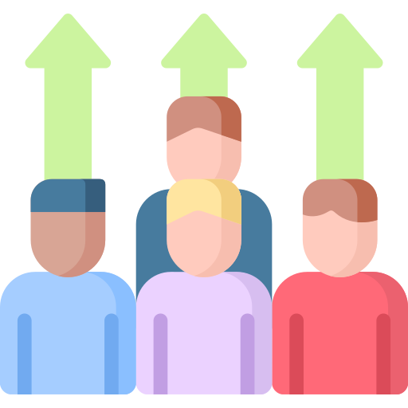

الرؤية :
القيام بدور حيوي في مجالات البحث العلمي التطبيقي القائم على أفضل وأحدث الأساليب التحليلية، من أجل والاجتماعي للقرارات والسياسات الاقتصادية، كما يقدم الاستشارات لدراسة الأثار الاقتصادية والمالية والوظيفية لمشاريع الأنظمة واللوائح.تعزيز التنمية الاقتصادية والاجتماعية. ويكرس المركز جهوده لتوفير البحوث الموجهة نحو تحليل الأثر الاقتصادي

دور المركز:
يعمل مركز البحوث والاستشارات الاقتصادية على مواءمة أنشطته مع أهداف رؤية 2030 من خلال خطط لدراسة القرارات المقترحة وخطط التنفيذ المعتمدة التي تسترشد بأهداف محددة مسبقًا ومؤشرات أداء رئيسية. وذلك بهدف تحقيق الأثر وتعميقه وإشراك فريق عمل متميز يضم أصحاب الخبرة في مجالات الدراسات المستهدفة، وعددًا من خريجي برنامج خادم الحرمين الشريفين التمييزين. والذين مثلوا جزء من رحلة التحول المهمة في بلادنا الغالية لإحداث نقلة نوعية في مختلف القطاعات، والتي رافقها تطوير برامج جديدة تتطلب قرارات تعكس تطلعات وقدرات بلادنا على أكمل وجه. يقوم مركز البحوث والاستشارات الاقتصادية، بمواءمة أنشطته مع مستهدفات الرؤية 2030 من خلال خطط دراسة القرارات المطروحة وخطط التنفيذ المعتمدة التي تسترشد بالأهداف المحددة مسبقاً ومؤشرات الأداء الرئيسية. وذلك، لتحقيق وتعميق الأثر وإشراك فريق من الخبراء المتمكن والمتميزين من المجالات المتعلقة بنوعية الدراسات المقدمة. كما يشمل عدد من خرجي برنامج خادم الحرمين الشريفين، الأكفاء والمتميزين وخريجي أفضل الجامعات العالمية. وذلك لكونهم جزء من رحلة التحول المهمة في وطننا الغالي والتي أحدثت نقلة نوعية في الأداء في مختلف القطاعات، والتي صاحبها استحداث برامج جديدة تتطلب قرارات لعكس طموحات وقدرات بلادنا على أكمل وجه.
دور المركز:
ومع التطور السريع في أدوات التحليل الاقتصادي القياسي وتطوراته ليتماشى مع التقدم التقني واستخدام وسائل الذكاء الصناعي المتقدمة، مما مكن من تبني نماذج قيمة وذات كفاءة مرتفعة. فيهدف المركز إلى تبني ما ستجد من تلك الطرق العلمية والتي أصبحت جزأ مهما من التحليل الاقتصادي والذي يتضمن: قياس الأثر للقرارات الاقتصادية، والأنظمة المستحدثة وتقيميها. واستخدام نماذج فعالة وحديثة في عملية التقييم. بالإضافة إلى دراسة المشاريع وعمل تقارير أوّليه تمثّل الخطوط العامة عن كافة جوانب المشروع والمشروعات المقترحة، والتي يمكن من خلالها التوصّل إلى اتخاذ قرارات مهمه تشمل توصيات مبنية على أسس علمية متطورة. كما يقدم المركز مجموعات من التقارير الاقتصادية من خلال إعداد التقارير التحليلية بشأن مجالات متنوعة من الجوانب الاقتصادية والفنية المُعدة من خبراء في المجالات والاقتصادية، تعزيز أواصر الشراكة والتعاون بين مختلف الجهات الفاعلة في المجالات التنموية. بالإضافة إلى المشاركة في عمل العديد من الفعاليات والتي تتضمن مؤتمرات وندوات وورش إلقاء المحاضرات والعروض التقديمية للعديد من المهتمين الرئيسيين وللعديد من المسئولين في مجموعة واسعة من القطاعات
منهجيتنا
منهجيتنا
منهجيتنا


عملائنا
فريق الخبراء
فريق من الخبراء المتمكن والمتميزين في المجالات البحثية المتعلقة بنوعية الدراسات المقدمة. كما يشمل عدد من خرجي برنامج خادم الحرمين الشريفين، الأكفاء والمتميزين وخريجي أفضل الجامعات العالمية.

تقييمات الآثار الاقتصادية
يعد تقييم الأثر الاجتماعي والاقتصادي (SEIA) أداة مفيدة للمساعدة في فهم النطاق المحتمل لتأثيرات التغيير المقترح (إيجابية أو سلبية)، والاستجابات المحتملة لأولئك المتأثرين في حالة حدوث التغيير. يمكن استخدامه لتقييم آثار اقتراح أو مجموعة واسعة من أنواع التغيير من اقتراح سياسة اقتصادية جديدة، أو متطلبات مشروع جديد وما يترتب علية على سبيل المثال من تغييرات في البنية التحتية يمكن أن يساعد هذا الفهم في تصميم استراتيجيات مناسبة لتقليل الآثار السلبية وتعظيم الآثار الإيجابية لأي تغيير. من المهم تحديد ليس فقط النطاق الكامل للتأثيرات، مثل التغييرات في مستويات الدخل والو التوظيف، والوصول إلى الخدمات، ونوعية الحياة، ولكن من المهم بالتالي تحديد المصدر الرئيسي للتأثير وتحديد الآثار التي قد تصدر من القطاعات الأخرى ذات العلاقة.

نماذج التنبؤ:
يُمكّن التنبؤ صانعي القرار من اتخاذ الخطوات اللازمة لتحقيق هدف معين من خلال توفير المعلومات الحيوية المتعلقة بالأحداث المستقبلية وحدوثها وحجمها. يعمل المركز على تحديد وبناء أفضل طريقة للتنبؤ يتم استخدامها وفقًا لموضوع البحث والإجراءات المتبعة. يعتمد على عوامل داخلية وخارجية اعتمادًا على التغيرات في البيئة المحيطة. يمكن إجراء التنبؤ إما عن طريق التعلم الآلي (ML) أو الطرق الحديثة الاقتصاد القياسي المتقدم. الهدف من أساليب تعلم الآلة هو نفس الأهداف الطرق الاقتصاد للقياسي. كلاهما يهدف إلى تحسين دقة التنبؤ من خلال تقليل التباين والبعد عن القيم الحقيقية، وعادةً ما يكون يكمن اختلافهم في كيفية إجراء مثل هذا التصغير باستخدام طرق ML التي تستخدم الخوارزميات غير الخطية للقيام بذلك. و يستخدم الاقتصاد القياسي التنبؤ الكمي الذي يعتمد على النماذج الرياضية للوصول إلى نتائج التنبؤ، ويستخدم القياسي البيانات التاريخية لدعم النتائج. جميعها إجراءات في دعم صنع القرار الذي يعزز أداء تطبيق القرارات بسلاسة في البيئة الاجتماعية والاقتصادية المتغيرة باستمرار.

دراسات الأثر الاقتصادي والضريبي
عادة ما يكون لخلق الوظائف تأثير مضاعف في جميع أنحاء المنطقة. تنتشر الوظائف الإضافية من خلال العلاقات مع الشركات والصناعات المرتبطة، وكذلك من خلال شراء السلع والخدمات. يوفر CERC صورة كاملة عن كيفية قيام شركات أو مشاريع معينة بخلق فرص العمل والدخل ونفقات الاستهلاك في جميع أنحاء اقتصاد المنطقة وتحديد آثارها الاقتصادية بما في ذلك الفوائد المباشرة وغير المباشرة والمستحدثة. بالإضافة إلى ذلك، يقوم CERC بإنشاء تقدير لمستوى الضرائب المحلية المناسبة التي تنتج عن دراسة الآثار الاقتصادية.

دراسات سوق العمل
يعد تقييم خصائص القوة العاملة المحلية جزءًا مهمًا من فهم الاقتصاد المحلي. يوفر CERC معلومات حول مزيج الوظائف والتدريب والتعليم والمهارات في حسب متطلبات سوق العمل. ويحلل قدرة القوى العاملة المحلية على ملء فرص العمل الحالية والمحتملة في المستقبل بشكل فعال. بالإضافة إلى ذلك، يقوم CERC بتقييم أنماط التوظيف في سوق العمل والقدرة التنافسية للقوى العاملة المحلية والفجوات بين متطلبات سوق العمل وجهود تنمية القوى العاملة.

دراسات الصناعة
يعد فهم كل من الاتجاهات الاقتصادية والصفات اللازمة لتعزيز النمو والتنمية أمرًا بالغ الأهمية لجذب الأعمال وجهود توطين الصناعة التي تستهدف صناعات معينة. استنادًا إلى تصنيف صناعي رسمي أو تعريف عملي لصناعة معينة، يحلل CERC الآثار الاقتصادية للصناعة، وبيانات العمالة والأجور، والمزايا المحلية، ومساهمات أصحاب العمل الرئيسيين، والاستجابات من مسح صاحب العمل.

تحليلات السوق والجدوى
يعد تحديد قبول السوق أو جدوى مشروع معين أمرًا ضروريًا لاتخاذ قرارات تجارية مستنيرة وضمان إنتاج النجاح لدراسات السوق والجدوى لمختلف المشاريع والتطورات والمواقع. تتمثل الأهداف الأساسية لهذا النوع من الدراسة في تقييم ما إذا كانت ظروف السوق مناسبة للتنمية، واستدامة المشروع على المدى القصير والطويل، وأفضل استخدام للموقع أو الموقع بناءً على مجموعة متنوعة من العوامل الاقتصادية والديموغرافية.